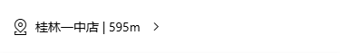

<div>{{ num }} is {{ num % 2 ? 'odd' : 'even' }}</div>
<div>{{ price * (1 - discount) }}</div>
import { computed } from 'vue';
<div>{{ num }} is {{ res }}</div>
import { ref, computed } from 'vue';
const num = ref(0);
const res = computed(() => num.value % 2 === 0 ? 'even' : 'odd')
import { computed } from 'vue';
const inc = () => {
console.log('do function inc');
}
const dec = computed(() => {
console.log('do computed dec');
})
<div>第1次 inc - {{ inc() }}</div>
<div>第2次 inc - {{ inc() }}</div>
<div>第1次 dec - {{ dec }}</div>
<div>第2次 dec - {{ dec }}</div>
do function inc do function inc do function dec
import { ref, computed } from 'vue';
let age = ref(18)
const res = computed(() => {
return age.value >= 18 ? 'adault' : 'teenage'
})
<div> {{ res }} </div>
const getUrl = computed(() => {
return (url) => {
return 'http://127.0.0.1:3000' + url
}
})
let score = ref(80)
const grade = computed(() => {
return (score) => {
switch (Math.floor(score / 10)) {
case 6:
return 'D'
case 7:
return 'C'
case 8:
return 'B'
case 9:
return 'A'
default:
return 'E'
}
}
})
<div>grade {{ score }} - {{ grade(score) }}</div>
<div>grade 55 - {{ grade(55) }}</div>
<div>grade 60 - {{ grade(60) }}</div>
<div>grade 71 - {{ grade(71) }}</div>
<div>grade 80 - {{ grade(80) }}</div>
<div>grade 90 - {{ grade(90) }}</div>
<div>grade 100 - {{ grade(100) }}</div>
<div>折后 {{ priceWithDis }}</div>
const priceWithDis = computed(() => price.value * (1 - discount.value))
const getDiscount = computed(() => {
return item => {
return (item.price * (1 - item.discount)).toFixed(2)
}
})
<div>总价 {{ sum }}</div>
import { ref, computed } from 'vue';
const num = ref(1);
const price = 9.9
const sum = computed(() => {
return num.value * price;
});
处理前
处理后
import { ref, computed } from 'vue';
const imgs = ref(['coffee0.jpg', 'coffee1.jpg', 'coffee2.jpg', 'coffee3.jpg', 'coffee4.jpg'])
const imgsUrl = computed(() => {
return imgs.value.map(img => new URL(`/src/assets/imgs/${img}`, import.meta.url).href)
})
<div class="line" :style="{ transform: `translateX(${ind * 100}px)` }"></div>
<div class="line" :style="`transform: translateX(${dis}px)`"></div>
const dis = computed(() => ind.value * 100)
<div class="line" :style="{ transform: trans }"></div>
const dis = computed(() => `translateX(${ind.value * 100}px)`)